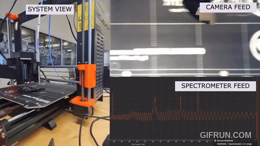
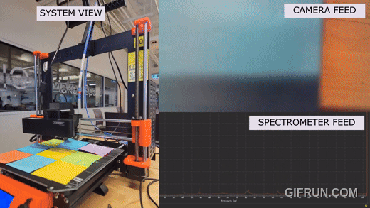

Integrating Sensor Fusion to Generate a 3D World View (Aircraft simulation) Github link WIP
In the works. See github for status, this will be updated when the time is right.
Low-resolution reflectometry for inline thin-film inspection (coauthored research paper)
See research paper !!


This project directly controls the Prusa I3 MK3S motion system using G-
code commands for thin-film imaging applications using a python UI.
Unlike normal 3D printing workflows, this pipeline bypasses homing, calibration, extrusion,
and safety checks, enabling precise motion without requiring the standard printing toolchain or
slicer.
This approach is essential because our MK3S printer has been physically modified (e.g., sensor
changes, removed extruder, instrumentation added). These modifications cause the printer’s
built-in self-checks to fail. Therefore, we operate the printer as a Cartesian robotic stage using
only motion-related commands.
The workflow supports:
• Absolute Cartesian moves (X/Y/Z)
o Raster scan generation (X-scan, Y-scan, serpentine)
• Adjustable speed, jerk, acceleration
• Boundary checking via a Python preprocessing system
• 100% manual execution of motion patterns in Pronterface
Time synchronization of data acquisition to the piecewise kinematics of the motion, is developed
and to be implemented.
Top 1% of all solvers on project Euler.
Mathematical computational puzzles. Genuinely
mathematically non trivial and a joy to think about math all day. Developed my math maturity,
but I'm still so far away from my math goals.
https://projecteuler.net/progress=alexzheng
Ontario Ministry of Transportation Dev Co-op
This is going to be short since going into detail about a co-op job would be too long and not necessary. I learned SQL and SQL servers (esp. Oracle), implemented
Python for scripting purposes, Learned a lot on Jakarata Enterprise Edition and Oracle WebLogic servers. Learned OOP, DI, singletons, interfaces, javaBeans, POJO,
etc.. Learned Git and am now quite familiar with it. A git pull is a git fetch and merge. Wrote wikis and documentation which was honestly really fun to coment
my impact on to the MTO and to be continually there to help my co-workers through clear, informative docuemntation. Learned Azure and CI and CD and developing in
a cloud environment. Worked with the introduction of Mobile Camera Units, which allow remote cities in Ontario to take photos for their driver's license and process
any problems regarding driver's license by giving them connection to our mainframe system. This was a highlight working on setting up camera and sigpads with workstations
and simulating taking photos and their processing; UAT is honestly fun. Considered edge cases such as twins, fraud cases, invalid photos (hair too long, slight face,
unclosed mouth, etc..). Another big part was test cases. I wrote test cases using Nunit for .NET apps and test cases using SoapUI (endpoint testing) for WebLogic servers using
WSDL, XML, and XSD files. Writing these test cases were like solving a puzzle! I made a lot of friends, worked with other students from Waterloo, learned
a lot, e.g networking and security, and loved the environment!
Take a look
SOLIDWORKS Parts Quoting System for 3D-printing
GitHub Link
A Game I Created: Spear Knight!
This is a PyGame developed top-down shooter game where you try to kill enemies, dodge enemy projectiles, and survive for
as many waves as possible!
This game was created from September 2023-December 2023 with Parsia Nejad-Sattary and Sean Yuen as part of a project for our programming (Python)
course. I was responsible for the enemy-fire functions; the tracking of the enemy projectiles to the player periodically. The way it works.
Each enemy's location is stored in a list, so while the round is active, we copy the exact location of each enemy and the player at a
given point in time (simple). Then we run through a for-loop for each enemy and generate a rotated-accordingly projectile directed at the
player. The projectiles are locked in this direction and move towards the player (which the player will dodge).
Ongoing, we have a counter that keeps track of the projectiles that leave the screen or hit the player, once all the projectiles are nullified,
the firing restarts. The complexities of this task were found in its integration in the code as Sean implemented the enemy-follow functions beforehand,
and debugging the occurence when the enemy is killed while the projectile is also nullified. This was very time-consuming to debug. The solution was found
through asking myself "what exactly is the problem to solve?" over and over again. If the enemy is killed and the projectile is out of the screen, the counter would be bugged
and the game wouldn't reset properly.